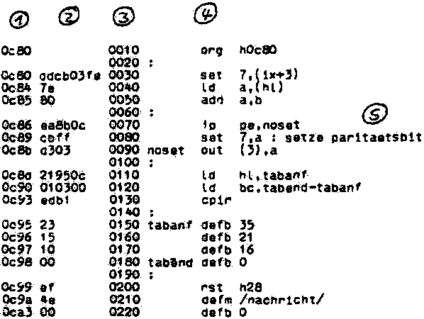

Nascom Journal |
1/80 |
Entdeckt der Assembler Fehler im Quelltext, so werden in der Assembler-Liste entsprechende Kommentare ausgegeben.
Nun aber das Wichtigste: der erzeugte Code. Den erzeugten Code kann man direkt in den Speicher schreiben lassen, an die Stelle, an der das Programm später ausgeführt werden soll. Dann kann man das Programm nach dem Assemblieren direkt ausführen. Falls man dann irgendwelche Änderungen machen will, geht man in den Assembler zurück, assembliert neu, usw.
Der erzeugte Code kann aber auch versetzt in den Speicher geschrieben werden. Ist z.B. ein Programm für die Adresse 1000H vorgesehen und steht dort aber der Textpuffer mit dem Quelltext, so läßt man den erzeugten Code an die Aaresse 3000H schreiben und kopiert ihn nach dem Assemblieren an die richtige Adresse herunter.
Beim Assemblieren in den Speicher überwacht ein guter Assembler, daß dabei keine Bereiche überschrieben werden, die für den Betrieb des Assemblers nötig sind, wie der Textpuffer, der Variablen- und der Stack-Bereich und der Assembler selbst. Ein guter Assembler ist also auch bei falsches Eingaben des Programmierers gegen Selbstzerstörung geschützt. (das ist keineswegs selbstverständlich)
Will man den erzeugten Code nicht direkt in den Speicher schreiben lassen, kann man ihn z.B. auf Tonband ausgeben lassen.
Dazu enthalten alle Assembler einen „Editor“. In den Editor kann man eine Zeilennummer gefolgt von der Textzeile direkt eingeben (wie beim Basic). Im Input-Mode erzeugt der Editor die Zeilennumnern selbst. Man kann Zeilen einfügen, löschen und einzelne Zeilen oder den ganzen Textpuffer umnummerieren. Ein Editor enthält (unterschiedlich komfortable) Möglichkeiten, Fehler in einer Zeile zu korrigieren. Man kann Zeilen suchen lassen, die bestimmte Textstücke enthalten, den Textpuffer oder Teile davon auf Band schreiben und wieder lesen.

Schließlich ist es noch wichtig, welche Peripheriegeräte vom Assembler aus angesprochen werden können, und wie einfach deren Bedienung ist. Obligatorisch ist das Tonbandgerät zum Speichern des Textpuffers und des erzeugten Objekt-Codes. Wünschenswert ist oft auch der Anschluß anderer Ein-/Ausgabegeräte wie z.B. Lochstreifenleser und -stanzer.
Besonders wichtig ist auch die Möglichkeit, einen Drucker oder Fernschreiber zum Ausdrucken von Quelltext und Assembler-Liste anschließen zu können.
BP
| Seite 13 von 16 |
|---|